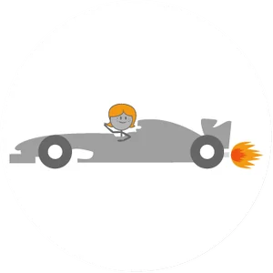
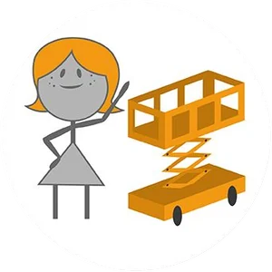
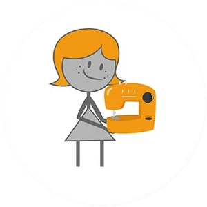
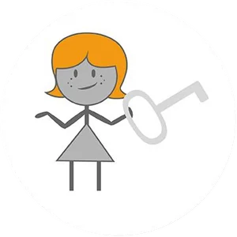
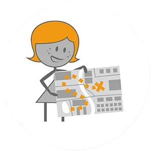
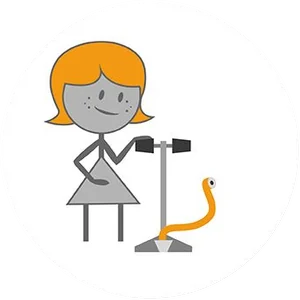
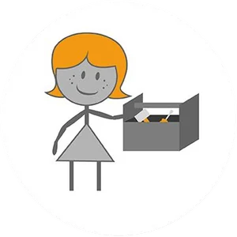
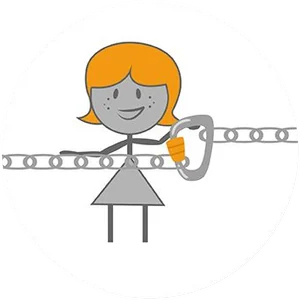

Doradztwo sprzedażowe i szkolenia zespołów sprzedażySprzedaż na przewidywalnych torach
Katarzyna Łukaszuk, Szczecin. Pomagam małym i średnim firmom poprawić wyniki działu sprzedaży: od audytu, przez taktykę i zespół, po wdrożenie zmian i kontrolę efektów.
Zanim cokolwiek zmienimy, pytam: w jakim celu?
Szukam przyczyny, a nie tylko gaszę skutki. Dlatego zaczynam od analizy: wyników, produktów, klientów, procesu sprzedaży, organizacji i zespołu.
Na tej podstawie wskazuję kilka czynników, które najmocniej wpływają na Państwa przychody, i razem z zespołem wprowadzamy konkretne zmiany. Korzystam ze sprawdzonych metod zarządzania sprzedażą, psychologii i ekonomii, dobieranych pod kątem tego, czy da się je szybko zastosować w praktyce.
Oferta
Działania, które przekładają się na wyniki sprzedaży. Można zacząć od jednego obszaru albo zaplanować całą przebudowę.

Szybka poprawa wyników sprzedaży
Analiza całego systemu sprzedaży i wskazanie elementów, które mają największy wpływ na przychody.
Zapytaj
Podnoszenie skuteczności zespołów sprzedaży
Audyt barier i potencjału zespołu, rekrutacja i wdrożenie handlowców, rozwój kompetencji.
Zapytaj
Optymalizacja taktyki sprzedaży
Audyt taktyki i organizacja struktur sprzedaży, tak żeby system pracował na wynik.
Zapytaj
Projektowanie dochodowego biznesu
Ocena pomysłu pod kątem potencjału sprzedażowego i pomoc w budowie modelu zarabiania.
Zapytaj
Wprowadzanie zmian w zespołach sprzedaży
Ocena gotowości zespołu do zmiany i przygotowanie menedżerów, którzy ją przeprowadzą.
Zapytaj
Optymalizacja produktów
Audyt produktów i usług oraz dopasowanie oferty do odbiorców i konkurencji.
Zapytaj
Rozwiązania kompleksowe
Wsparcie przy przebudowie organizacji sprzedaży, gdy zmiana obejmuje wiele obszarów naraz.
Zapytaj
Facylitacja
Prowadzenie pracy grupy osób z różnych działów, która ma wspólnie wypracować rozwiązanie.
ZapytajABS Sprzedaży
Pakiet działań, który daje przewidywalność przychodów i stabilizację działu sprzedaży. Dla małych i średnich firm, które chcą szybko i fachowo poprawić sytuację w sprzedaży.
- Techniki oddziaływania na klientaŚcieżka zakupowa klientów i skuteczne sposoby oddziaływania handlowego, które zwiększają liczbę i wartość transakcji.
- Oferty handlowe, które sprzedająStandard i wzory ofert oraz nauka zespołu, jak z nich korzystać.
- Planowanie i kontrola sprzedażySystem działań i wskaźników, dzięki któremu plany sprzedaży stają się wykonalne.
- Rekrutacja handlowców i liderówKomplet metod do rekrutacji i wdrożenia wartościowych pracowników sprzedaży.
Obejmuje przygotowanie rozwiązań, ich wdrożenie i kontrolę skuteczności. Można skorzystać z całego pakietu albo z wybranych elementów.
Zapytaj o ABS SprzedażyJak pracuję
Każde rozwiązanie składam pod konkretną firmę, z metod, które sprawdziłam w praktyce.
Instrumenty zarządzania sprzedażą i marketingiem
Sprawdzone osobiście metody, techniki i systemy działania, zarówno tradycyjne, jak i najnowsze.
Metody wprowadzania zmian w firmach
Znane, wypróbowane metodologie oraz ich autorskie adaptacje i połączenia.
Rozwój ludzi i zespołów
Metody z psychologii, socjologii i ekonomii, dobrane pod kątem realności i szybkości zastosowania.
O mnie
Zajmuję się sprzedażą od ponad 20 lat, w tym ponad 10 lat zarządzałam zespołami sprzedaży i marketingu. Dziś pracuję jako doradca, coach, facylitator i trener.
Specjalizuję się w tworzeniu skutecznych taktyk sprzedaży, wprowadzaniu zmian w zespołach sprzedaży i wpływaniu na zachowania i decyzje klientów. Jestem praktykiem: liczy się dla mnie konkretny rezultat. Lubię się uczyć, od firm, dla których pracuję, i na własną rękę. Cenię porządek i sprawną organizację.
Współpracuję z doświadczonymi specjalistami: psychologiem od ocen pracowniczych, analitykiem, agencją interaktywną i researcherem. Wiele pomysłów biorę też spoza pracy, z gór, nauki języków i treningów.
- Ponad 30 zamkniętych projektów sprzedażowych i marketingowych
- Zmiany wdrażane w dwóch korporacjach i sześciu małych i średnich firmach
- Długofalowe doradztwo dla branży wydawniczej i reklamowej
- Praca rozwojowa z kilkunastoma menedżerami sprzedaży
Najnowszy projekt
Górska Szkoła Liderów
Połączyliśmy doświadczenia ratowników i przewodników górskich z praktyką trenera biznesu i coacha, żeby skutecznie uczyć kompetencji przywódczych.
Moi klienci
Firmy, z którymi pracuję i pracowałam w ostatnich latach.
Warunki współpracy
Koszt konsultingu ustalamy indywidualnie, pod konkretne rozwiązanie. Do wyboru są trzy sposoby rozliczenia.
Rozliczenie godzinowe
Stawka godzinowa i ewidencja czasu pracy konsultanta. Przy coachingu i okazjonalnym doradztwie.
Rozliczenie zadaniowe
Wynagrodzenie za określone zadanie, np. audyt, opracowanie, warsztat facylitacyjny albo szkolenie.
Rozliczenie ryczałtowe
Stała miesięczna kwota. Przy dłuższej współpracy obejmującej różne działania doradcze.
Porozmawiajmy o Państwa sprzedaży
Proszę napisać, z czym mierzy się Państwa dział sprzedaży. Odpowiem i zaproponuję, od czego zacząć.